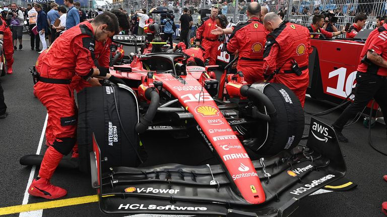

Istoria Motorsportului
Competițiile de motorsport există de mult timp și au evoluat constant de-a lungul anilor. În prezent, acestea sunt un spectacol de viteză, putere și tehnologie avansată.

Primul campionat mondial de Formula 1 a avut loc în anul 1950 și a fost câștigat de Nino Farina pe un Alfa Romeo. De atunci, sportul a devenit din ce în ce mai popular și a evoluat continuu în termeni de tehnologie și siguranță. Astăzi, Formula 1 este cea mai populară și vizionată competiție de motorsport din lume.
În afara Formula 1, există multe alte competiții de motorsport, inclusiv cursele de motociclete, raliurile și competițiile de anduranță. Aceste competiții au evoluat și ele constant și au adus noi inovații în lumea motorsportului.
Industria auto a contribuit semnificativ la dezvoltarea motorsportului, furnizând mașinile și tehnologia necesare pentru a face ca aceste competiții să fie posibile. Multe dintre cele mai cunoscute echipe și constructori de mașini sunt implicate în motorsport, inclusiv Ferrari, Mercedes-Benz, BMW și Porsche.
Motorsportul este o modalitate excelentă de a demonstra inovația, performanța și tehnologia din industria auto. Așadar, nu este de mirare că această lume este atât de fascinantă și de populară pentru fanii sporturilor cu motor.